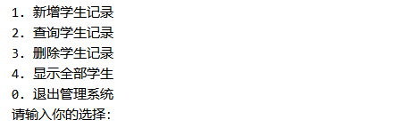
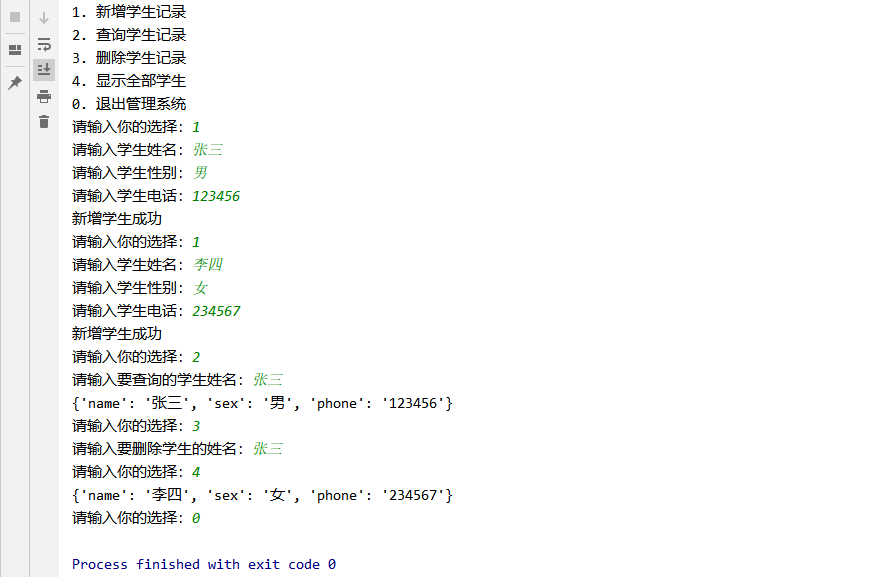

项目-学生管理系统
目标
综合应用已经学习过的知识点：
- 变量
- 流程控制
- 函数
- 文件操作
- 列表
- 字典
- 字符串
系统需求
程序启动，显示功能菜单

用户根据不同数字选择不同功能
学生记录的信息有姓名，性别和电话
方法一：使用全局变量保存信息
主函数
1 | def main(): |
功能菜单显示函数
1 | def show_menu(): |
新增学生记录
1 | def add_student(): |
查询学生信息
1 | def stu_find(find_stu_name): |
删除学生信息
1 | def stu_del(del_stu_name): |
程序运行结果

方法二：使用文本保存学生记录改写
主函数
1 | def main(): |
新增学生记录
1 | def add_student(): |
查询学生记录
1 | def stu_find(find_stu_name): |
删除学生信息
1 | def stu_del(del_stu_name): |
这里的逻辑就是去一行一行的读，如果那行存在要删除学生的姓名的字符串 就不把那行缓存到temp变量中，等读完再写回源文件来进行删除操作
方法三：使用类以及封装的思想
学生类
1 | class Student(object): |
学生的管理类
1 | class StuManager(object): |
用来执行的流程类
主要就是对学生的管理类进行再次封装
1 | class Application(object): |
主函数
1 | student_manager = StuManager() |
小结
本篇以三种方法实现了学生管理系统，待后续学了数据库的接口在进行优化。本篇有些函数只是为了夯实基础故意这么设计，其实不必这么麻烦。